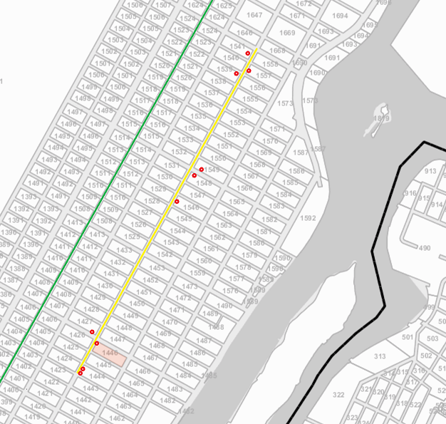
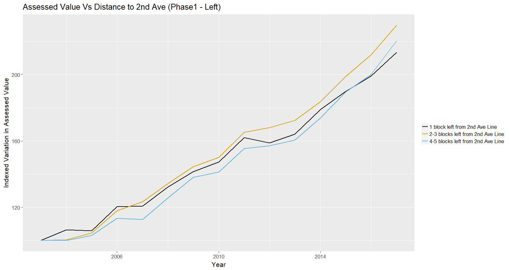
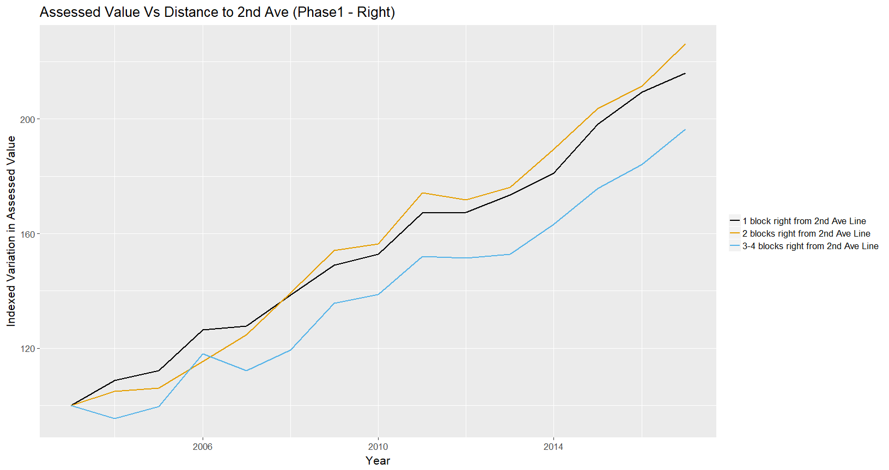
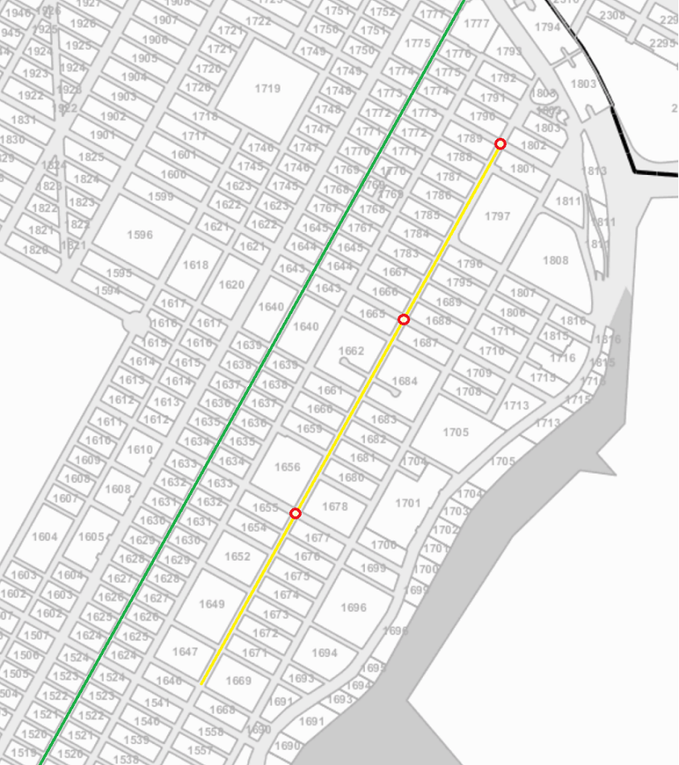
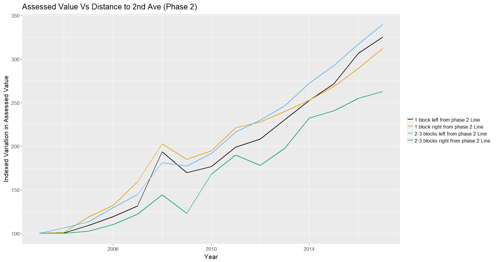

Analysis of Property Assessed Values
One of the analysis we decided to perform to answer our question, was to see how the 2nd Ave line project has affected the Market Value of property located in the project’s area of influence (basically, phase 1 and 2, because phase 3 and 4 have no funding commitments yet).
The detailed analysis can be found in EDA - Property Market Values, but we found inconclusive results with regards to whether the 2nd Ave Line project has affected Market Value for properties located in the vicinity to the 2nd Ave Line.
As an importance observation we made duirng such analysis, is that the publicly available data offered by the The Department of Finance (DOF) goes back to 2007 only, while news about the project and properties in the area of influence becoming more valued, date many years back.
So as additional work, since we wanted to analyse years previous to the commencement of the construction of phase 1, we performed an additional research and were able to find property “Assessed Values” back to 2003 in the “Primary Land Use Tax Lot Output” (PLUTO) dataset, developed by the New York City Department of City Planning’s (DCP).
Although the property “Assessed Values” are different from property “Market Values”, we found that they are linearly correlated since, according to the NY state DOF, the property “Assessed Value” is a percentage of the estimated “Market Value” of a property depending of the tax class so, as example, in a city or town assessing at 100% of market value for a specific tax class, the market value for that class is equal to the assessment value.
Analysis of Assessed Values for Phase 1
To try to see if the 2nd Ave Line project has affected the Assessed Value of property located near the Line, we added a column called “Distance” and used the block number to record the approximate distance (in blocks) from each property, to the 2nd Ave Line.
For this purpose, we used the Block number column/variable and the official tax map for the City of New York, which graphically shows the the block number, street names and other information in the map. The link where we were able to access the online Digital Tax Map is: http://gis.nyc.gov/taxmap/map.html
In such map, we were able to manually place the pre-existing Lexington-Fourth Avenue Line (green line), the phase 1 of the 2nd Ave project (yellow line) and the stations entrances, to visually determine the block numbers that are near the phase 1 of the 2nd Ave line and their distance (in blocks) to the Line and to an station entrance:

When determining the distances of the properties to the 2nd Ave line, we differentiated between properties to the left of the 2nd Ave Line and properties to the right of the Line, because we suspected that the influence of the 2nd Ave Line may be greater for properties to the right of the line than for properties to the left, due to the proximity of the pre-existing Lexington-Fourth Avenue green Line right to the left of the 2nd Ave Line project.
Properties on the left side of the 2nd Ave Line - Phase 1
For blocks to the left of the 2nd Ave Line, as we can see in the map above, we can determine 3 different categories:
- block numbers that are within 1 block to the left;
- block numbers that are within 2-3 blocks to the left; and
- block numbers that are within 4-5 blocks to the left; from the 2nd Ave Line
Using the block numbers for each of the 3 categories detailed above, we can add a column called “Distance” and use the block number to record the approximate distance (in blocks) from each property to the left of the 2nd Ave Line - Phase 1:
library(tidyverse)
property_upper_east <- read.csv("data/PLUTO_upper_east.csv")
data_phase1 <- property_upper_east %>%
mutate(Distance = ifelse(Block %in% c(1424:1427, 1529:1532,1539:1541,1423,1428:1433,
1525:1528,1533:1538,1646),
'1 block left from 2nd Ave Line',
ifelse(Block %in% c(1404:1407,1512:1515,1522:1524,1403,1408:1413,
1508:1511,1516:1521,1624),
'2-3 blocks left from 2nd Ave Line',
ifelse(Block %in% c(1384:1387,1495:1498,1505:1507,1383,1388:1393,
1491:1494,1499:1504,1602),
'4-5 blocks left from 2nd Ave Line',
'other'))))Now we can visualize and compare the variation of Property Assessed Assessed Values over time, among the different categories detailed above.
For this purpose, we first summarize by Year and Distance, then we scale the data and create an index to visualize variations over time with time series lines for recent years:
#First, summarize by Year and Distance:
data_phase1 <- data_phase1 %>%
group_by(Year, Distance) %>%
summarise(Total = sum(AssessTot))
#Now, scale the data and create an index to visualize variations over time, then plot:
data_phase1 <- data_phase1 %>% group_by(Distance) %>%
filter(Distance != "other") %>%
mutate(index = 100*Total/Total[1]) %>% ungroup()
#Plot time series:
library(ggthemes)
ggplot(data_phase1, aes(Year, index, color = Distance)) + geom_line(lwd = 1) +
ggtitle("Assessed Value Vs Distance to 2nd Ave (Phase1 - Left)") +
labs (x = "Year", y = "Indexed Variation in Assessed Value") +
theme_grey(16) +
theme(legend.title = element_blank()) +
scale_colour_colorblind()
Conclusion: From the graph above, we think that it is inconclusive whether phase 1 of the 2nd Ave Line project is having an impact on the increase in Property Assessed Value, for properties located in the vicinity to the left of the Line. The increase in market value seems very similar across the different categories.
Properties on the right side of the 2nd Ave Line - Phase 1
For blocks to the right of the 2nd Ave Line, as we can see in the map previously shared above, there are just 3 blocks between the 2nd Ave Line and the East River, except for a small row of few blocks located four blocks from the Line (at the north end), so we established 3 different categories as follows:
- block numbers that are within 1 block to the right;
- block numbers that are within 2 blocks to the right; and
- block numbers that are within 3-4 blocks to the right; from the 2nd Ave Line
Using the block numbers for each of those 3 categories, we followed the same procedure described above to analyze properties to the left, going back to the original data to add a column called “Distance” and using the block number to record the approximate distance (in blocks) from each property to the right of the 2nd Ave Line - phase 1:
data_phase1 <- property_upper_east %>%
mutate(Distance = ifelse(Block %in% c(1444:1447,1546:1549,1556:1558,1443,1448:1453,
1542:1545,1550:1555,1668),
'1 block right from 2nd Ave Line',
ifelse(Block %in% c(1464:1467,1563:1566,1573,1463,1468:1473,
1559:1562,1567:1571,1690),
'2 blocks right from 2nd Ave Line',
ifelse(Block %in% c(1482:1484,1580:1583,1480,1485:1490,1576:1579,
1584:1587,1590,1592,1589),
'3-4 blocks right from 2nd Ave Line',
'other'))))Now we can visualize and compare the variation of Property Assessed Values over time, among the different categories detailed above, by following the same procedure described previously:
#First, summarize by Year and Distance:
data_phase1 <- data_phase1 %>%
group_by(Year, Distance) %>%
summarise(Total = sum(AssessTot))
#Now, scale the data and create an index to visualize variations over time, then plot:
data_phase1 <- data_phase1 %>% group_by(Distance) %>%
filter(Distance != "other") %>%
mutate(index = 100*Total/Total[1]) %>% ungroup()
#Plot time series:
ggplot(data_phase1, aes(Year, index, color = Distance)) + geom_line(lwd = 1) +
ggtitle("Assessed Value Vs Distance to 2nd Ave (Phase1 - Right)") +
labs (x = "Year", y = "Indexed Variation in Assessed Value") +
theme_grey(16) +
theme(legend.title = element_blank()) +
scale_colour_colorblind()
Conclusion: From the graph above, although properties located within 1-2 blocks right from the Line have had a slightly higher increase than properties located within 3-4 blocks from the Line, we think that it is inconclusive whether phase 1 of the 2nd Ave Line project is having an impact on the increase in Property Assessed Value, for properties located in the vicinity to the left of the Line.
Analysis of Assessed Values for Phase 2
For phase 2 of the project, we followed the same procedure, using the planned path and stations for phase 2 of 2nd Ave Line project, adding a column called “Distance” and using the block number to record the approximate distance (in blocks) from each property, to the planned phase 2 of the 2nd Ave Line.
As described above, we used the Block number column/variable and the official tax map for the City of New York, which graphically shows the the block number (http://gis.nyc.gov/taxmap/map.html) so we generated the following image, where we placed the pre-existing Lexington-Fourth Avenue Line (green line), the phase 2 of the 2nd Ave project (yellow line) and the stations entrances, to visually determine the block numbers that are near the planned phase 2 of the 2nd Ave line and their distance (in blocks) to the Line:

Using the map above, we determined the following 4 categories:
- block numbers that are within 1 block to the left;
- block numbers that are within 1 block to the right;
- block numbers that are within 2-3 blocks to the left; and
- block numbers that are within 2-3 blocks to the right; from the 2nd Ave Line
Using the block numbers for each of those 3 categories, we followed the same procedure performed above for phase 1, going back to the original data to add a column called “Distance” and using the block number to record the approximate distance (in blocks) from each property to the phase 2 of the planned 2nd Ave Line:
data_phase2 <- property_upper_east %>%
mutate(Distance = ifelse(Block %in% c(1654:1656, 1665:1667, 1788:1791,1647:1652,1659:1662,
1783:1787), '1 block left from phase 2 Line',
ifelse(Block %in% c(1676:1678, 1687:1689, 1801:1803,1669:1675,
1680:1684,1795:1797),'1 block right from phase 2 Line',
ifelse(Block %in% c(1625:1640,1643:1645,1767:1776),
'2-3 blocks left from phase 2 Line',
ifelse(Block %in% c(1691,1693:1696,1699:1705,1708:1711,1713,1715:1716, 1806:1808,1815,1816,1811,1813),
'2-3 blocks right from phase 2 Line',
'other')))))Now we can visualize and compare the variation of Property Assessed Values over time, among the different categories detailed above, by following the same procedure described previously:
#First, summarize by Year and Distance:
data_phase2 <- data_phase2 %>%
group_by(Year, Distance) %>%
summarise(Total = sum(AssessTot))
#Now, scale the data and create an index to visualize variations over time, then plot:
data_phase2 <- data_phase2 %>% group_by(Distance) %>%
filter(Distance != "other") %>%
mutate(index = 100*Total/Total[1]) %>% ungroup()
#Plot time series:
ggplot(data_phase2, aes(Year, index, color = Distance)) + geom_line(lwd = 1) +
ggtitle("Assessed Value Vs Distance to 2nd Ave (Phase 2)") +
labs (x = "Year", y = "Indexed Variation in Assessed Value") +
theme_grey(16) +
theme(legend.title = element_blank()) +
scale_colour_colorblind()
Conclusions: From the graph above we think that it is inconclusive whether the planned phase 2 of the 2nd Ave Line project is having an impact on the increase in Property Assessed Value for properties located in the vicinity of the Line.
So as final conclusion, even after extensive work and effort put into being able to analyze years previous to the commencement of the construction of phase 1, after exploring different datasets, we were not able to get any conclusion on whether the 2nd Ave Line project has affected Market and/or Assessed Value for properties located in the vicinity to the 2nd Ave Line.
We think think that this may be due to the way in which he New York City Department of City Planning’s (DCP) estimates the increase in market values of the properties, based on the valuation on the whole neighborhood so, our analysis being performed with just some blocks of difference is just showing very similar increase patterns.
We didn’t performed further analysis by comparing with other neighborhoods because we think that other neighborhoods may have their own realities and their own causes for increases and decreases in values.
Additional work performed: After our analysis, we tried to explore and visualize the data to try to find out if there was any different result by analyzing separately residential and commercial properties, but we didn’t find any interesting result.